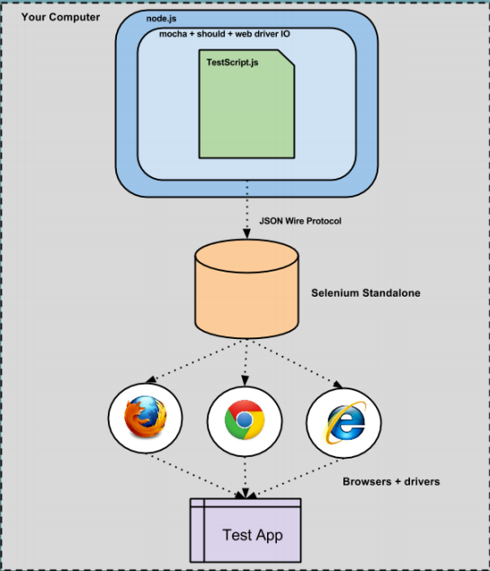
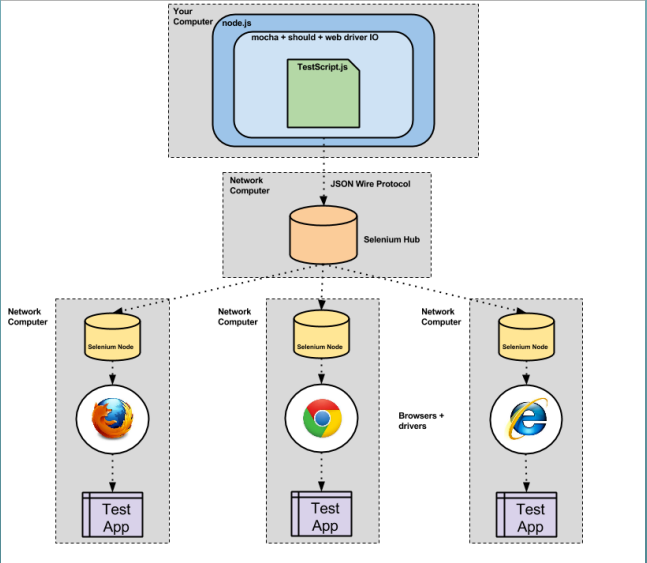
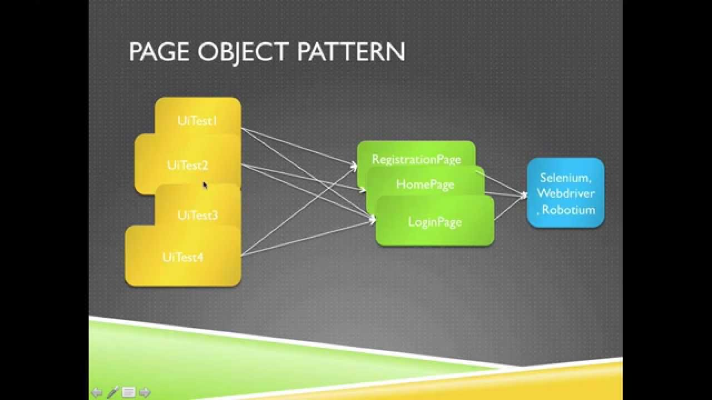

Diving To Selenium

What we wanted in a tool
- Able to test a websites functionality and interactions
- CI and manual implementations capable
- Uses an easy-to-read format for non-programmers
- Easily supported within current tech stacks
- Preferably uses open source software (except cloud-based platforms)
- Able to run tests on multiple OS/Browser versions and combinations
What can Selenium Do
- Verify elements on a page
- Verify URL and link text
- Populate form data and submit
- Validate form errors
- Validate CSS properties
- Test web apps on multiple OS/browser combinations
- Selenium 3.0 supports mobile apps
Selenium & JS to the rescue
Framework specifics
- Node.js: JavaScript runtime environment
- Mocha: test runner framework that executes test scripts
- Should/Expect: assertion library
- WebdriverIO: browser control bindings (JS programming language bindings - communicates with Selenium)
- Selenium: browser abstraction and running factory (starts and communicates with browser) Grunt - JavaScript task runner
- grunt-webdriver: plugin for Grunt with Mocha + WebdriverIO as test runner; includes Browser/Mobile drivers + Browsers (IE, Chrome, Firefox, Safari)
WebdriverIO (Commands)

Local Setup
- Node.js: Runs the Mocha test-framework and test-runner for the scripts.
- WebdriverIO: Communication gateway for JS and Selenium using the JSON Wire Protocol.
- Selenium invokes local browser using a driver to test the web application.

Cloud Setup
- Node.js: Runs the Mocha test-framework and test-runner for the scripts.
- Should/Expect: Assertion librarys for the scripts.
- WebdriverIO: Communication gateway for JS and cloud-based testing platform using JSON Wire Protocol. (Sauce Labs, BrowserStack, ...)
- Cloud-based testing platform will automatically setup the correct OS/Browser combinations to test the web app.
Selenium Strategy

Page Objects
- Allows for reuse
- Minor edits for changes in the DOM
- Page objects should have a sane number of items
XQuery & RegEx is your friend
- XQuery is an XML query language that makes use of XPath to query XML structures. This is less flaky than full xpaths.
- //div[@class='content_body']/ul[2]
- CSS values can be used, but if they are non-unique, there will be issues.
- #aba-member-benefits__title
Common Pitfalls
- Slow to run
- #Automate_Everything
- Hard to maintain
- Not reliable
Real issues
- IFrames
- Drag and Drop
- Menus with nested layers
- Mid-state animation testing
Install and Run
mkdir webdriverio-test && cd webdriverio-test #Download latest selenium and chrome driver curl -O http://selenium-release.storage.googleapis.com/3.0/selenium-server-standalone-3.0.1.jar curl -O https://chromedriver.storage.googleapis.com/2.27/chromedriver_mac64.zip #start selenium server java -jar selenium-server-standalone-3.0.1.jar #install webdriver.io npm install webdriverio #configuration ./node_modules/.bin/wdio config #run your test alone node test.js #run your test with test runner ./node_modules/.bin/wdio
Selenium with webdriver
ABA Aem Login
var expect = require('chai').expect;
var FormPage = require('../pageobjects/form.page');
var page = require('../pageobjects/page')
describe('auth form', function () {
it('should deny access with wrong creds', function () {
FormPage.open_login();
browser.saveScreenshot('./first1.jpg');
FormPage.username.setValue('foo');
FormPage.password.setValue('bar');
FormPage.submit();
browser.saveScreenshot('./first2.jpg');
expect(FormPage.flash.getText()).to.contain('User name and password do not match');
});
it('should allow access with correct creds', function () {
FormPage.open_login();
FormPage.username.setValue('admin');
FormPage.password.setValue('ABAcm$');
FormPage.submit();
page.getbaseurl();
browser.saveScreenshot('./second.jpg');
expect(browser.getUrl()).to.contain('/projects.html/content/projects');
});
});
ABA Aem Login
var expect = require('chai').expect;
var FormPage = require('../pageobjects/form.page');
var page = require('../pageobjects/page')
describe('auth form', function () {
it('should deny access with wrong creds', function () {
FormPage.open_login();
browser.saveScreenshot('./first1.jpg');
FormPage.username.setValue('foo');
FormPage.password.setValue('bar');
FormPage.submit();
browser.saveScreenshot('./first2.jpg');
expect(FormPage.flash.getText()).to.contain('User name and password do not match');
});
it('should allow access with correct creds', function () {
FormPage.open_login();
FormPage.username.setValue('admin');
FormPage.password.setValue('ABAcm$');
FormPage.submit();
page.getbaseurl();
browser.saveScreenshot('./second.jpg');
expect(browser.getUrl()).to.contain('/projects.html/content/projects');
});
});